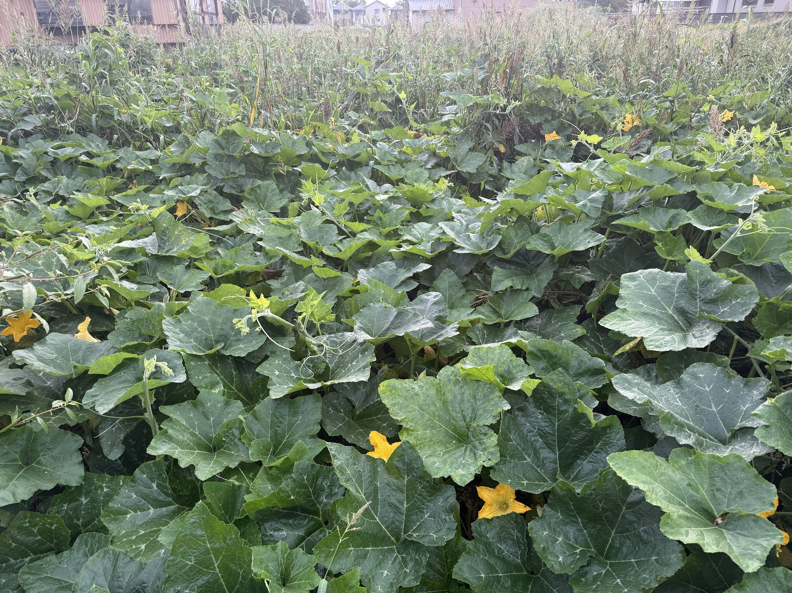

About Natural Farming
Fukuoka's philosophy, and the farming method to choose in an era of fertilizer crisis
In 2026, the petrochemical facilities of the Persian Gulf were destroyed in war, and a significant share of the world's fertilizer supply has been lost for years. Both nitrogen and phosphate fertilizers are "byproducts" of oil and natural gas refining. When refineries stop, fertilizer feedstocks stop too.
If fertilizer won't return for years, farmland must be planted without chemical fertilizer. This is not a choice — it is physical necessity. But one man foresaw exactly this situation fifty years ago and established a farming method that depends on no chemical inputs. His name was Masanobu Fukuoka.
Masanobu Fukuoka (1913–2008) was a Japanese agricultural scientist and philosopher. He established a farming method known as "do-nothing farming" and influenced people around the world.
His book The One-Straw Revolution has been translated into more than twenty languages and forms a philosophical foundation for permaculture and organic farming movements. Using his own bred "Happy Hill" rice variety in no-till cultivation, Fukuoka harvested approximately 5.5 tons of rice per hectare with no fertilizer — yields comparable to conventional agriculture, achieved with zero chemical inputs.
Natural farming is returning to nature, following nature, and observing nature.
AI is replacing much of desk work. Accounting, legal, translation, marketing, programming — for the price of a monthly subscription, a single person can now perform the work of an entire company. If AI takes over work, what does a human do?
One answer: spend time on what AI cannot do. Touch the soil. Converse with plants. Read weather and seasons. Observe the life of soil microorganisms. AI can identify pests by image recognition and suggest optimal work days from weather data, but smelling the earth and feeling a leaf's texture remains human work.
In a world where AI handles efficiency, time spent in dialogue with nature becomes work only humans can do. Natural farming is not merely a means of food production — it is a redefinition of the human role in the AI era.
Fukuoka's natural farming is based on four principles:
Don't till the soil. Tilling destroys soil aggregate structure and fragments microbial networks. No one tills the soil in nature, yet forests thrive for thousands of years.
Apply neither chemical fertilizer nor compost. In healthy soil, mycorrhizal fungi and microbes supply the nutrients plants need. External fertilizer inputs disrupt the balance of the soil ecosystem.
Use no pesticides or herbicides. In a diverse ecosystem, the balance between pests and their natural enemies maintains itself. Pesticides destroy not only that balance but also soil microbial diversity.
Don't treat grass as the enemy — this is Fukuoka's distinctive principle, setting him apart from other organic farming and permaculture approaches. "Weeds" cover the soil with green, maximize photosynthetic area, and continuously send liquid carbon from their roots to soil microbes. Dr. Christine Jones's Light Farming scientifically validated this principle fifty years later.
Look carefully at the four principles and you'll notice they all take the form "do not ___." Don't till. Don't fertilize. Don't spray. Don't weed. This is not laziness. It is the conclusion of long observation: nature does the work better than human intervention does.
Soil microbiomes, plant physiology, the balance between pests and predators — these are complex systems. They have feedback loops, emergence, irreversibility, and path dependence, and they cannot be decomposed into parts. "Solve" and "optimize" are not the right verbs here.
This is the point that most contradicts the AI community's intuition. AI has evolved by defining an objective function and optimizing it. Bring that methodology straight into a complex system, and what you mean as "management" often ends as destruction. A mycorrhizal network takes a year to destroy and decades to restore — this asymmetry of irreversibility is one of the structures AI finds hardest to imagine.
Fukuoka saw this in practice in 1975. Dr. Christine Jones backed it up in science in 2018. And in 2026, in an age when fertilizer does not arrive, this "let-go-of-control" method is the only one that can keep producing food.
"Do-nothing farming" is the opposite of laziness.
It is the wisest human posture possible in the face of a complex system.

Regenerative Agriculture
Regenerative agriculture is a farming approach aimed at restoring soil health and regenerating ecosystems. It shares much with Fukuoka's natural farming and has gained attention as a climate response in recent years.
Now, a second urgent reason has been added: the age when fertilizer is unavailable. The petrochemical facilities destroyed in the 2026 Middle East war will take 3–5 years to rebuild. Even when chemical fertilizer returns, permanent transit fees and reconstruction costs will make "farming that buys fertilizer" far more expensive than before. A farming method that doesn't depend on external inputs is no longer a philosophy — it is economic rationality.
Learn about Light FarmingKey Concepts
Healthy soil hosts a remarkably diverse community of microorganisms — bacteria, fungi, protozoa, and more. They help plants absorb nutrients and protect them from disease.
Mycorrhizal fungi that live in symbiosis with plant roots form vast underground networks. Through these networks, plants exchange nutrients and information with each other.
Plants absorb CO2 through photosynthesis and send it into the soil through their roots as "liquid carbon." When this carbon is stably stored in soil, it can mitigate climate change.
Growing diverse plants increases soil microbial diversity too. Diverse ecosystems are more resilient to pests and better able to adapt to environmental change.
Our Practice
On the green chlorite schist soils of Tokushima, Japan,
we practice natural farming combined with Light Farming.